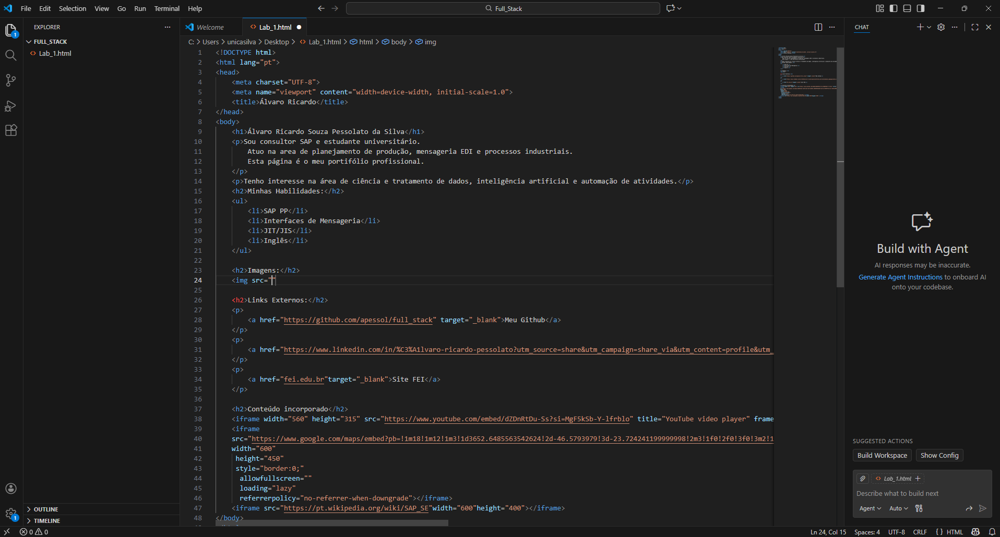

Álvaro Ricardo Souza Pessolato da Silva
Olá! Sou consultor SAP e estudante universitário, com foco em tecnologia, processos industriais e melhoria contínua.
Esta página inicial é o esqueleto do meu portfólio profissional e será expandida com projetos, experiências e resultados.
Minhas habilidades e interesses
- SAP PP e processos de planejamento de produção.
- Mensageria EDI e integração entre sistemas.
- Lógica de programação e automação de tarefas.
- Interesse em dados, inteligência artificial e desenvolvimento web.
Imagens



Links externos
Meu GitHub
Meu LinkedIn
Site da FEI
Conteúdos incorporados (iframes)